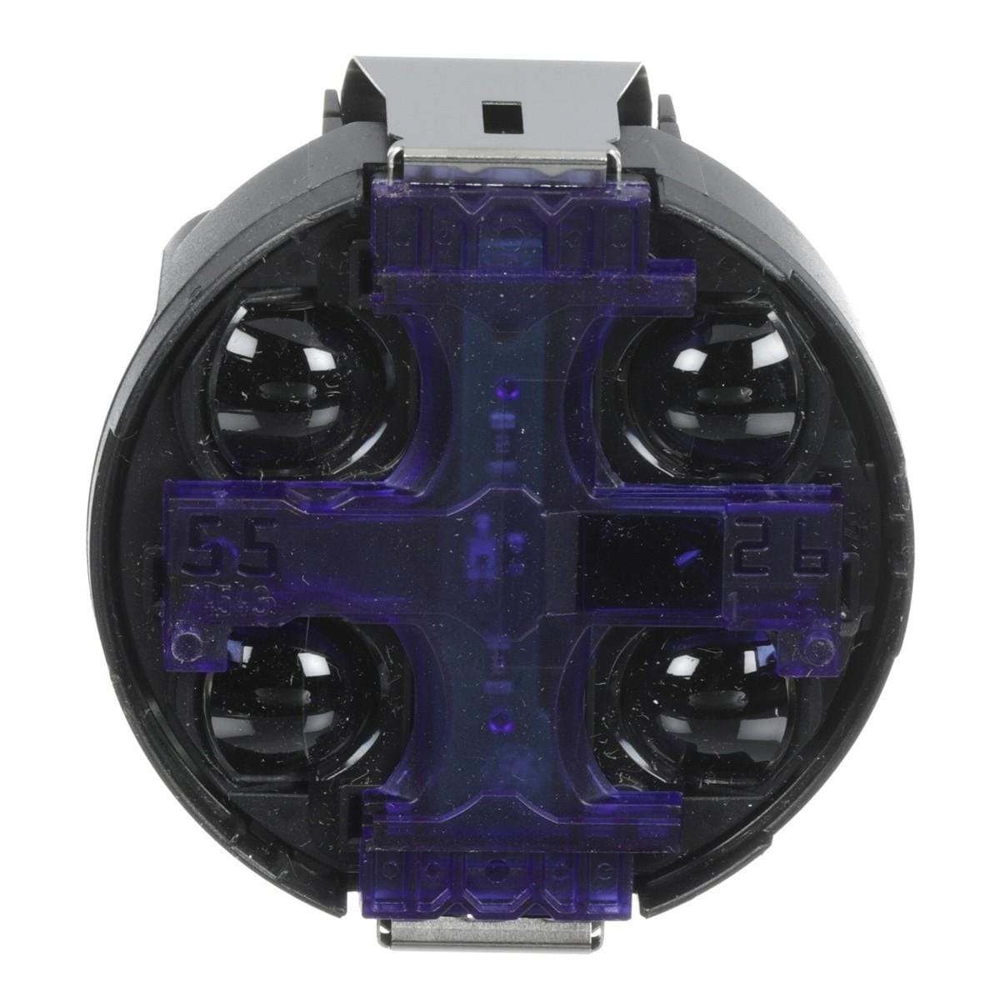

SENSOR DE CHUVA / GEL ÓPTICO
Gel óptico · 4,4 cm
Mégane e outras aplicações sob consulta
GEL ÓPTICO PARA SENSOR DE CHUVA
Gel óptico de fabricação própria para instalação e reinstalação de sensores de chuva. Produtos para todas as marcas de veículos, nacionais e importados.
Enviamos para todo o BrasilPARA QUEM TRABALHA COM PRECISÃO
Concessionárias · Oficinas · Vidros automotivos
ENCONTRE A CONEXÃO CERTA
Produtos de fabricação própria para todas as marcas de veículos, nacionais e importados.
Consulte o formato para o seu sensor.
3 produtos para explorar
SENSOR DE CHUVA / GEL ÓPTICO
Mégane e outras aplicações sob consulta
SENSOR DE CHUVA / GEL ÓPTICO
A3 · A4 · A6 · A8 · Q5 · Q7 — consulte aplicação
SENSOR DE CHUVA / GEL ÓPTICO
Mégane · Grand Tour · Fluence — consulte aplicação
Tente outra busca ou envie uma foto do sensor para a HATHY.
Consultar pelo WhatsAppA compatibilidade depende do sensor instalado, do ano e da versão do veículo. Confirme a aplicação antes de comprar. As imagens apresentam referências de formatos.
A ORIGEM É HATHY®
PRODUTOS COM A NOSSA MARCA
Os géis ópticos HATHY são de fabricação própria, desenvolvidos para o acoplamento entre o sensor de chuva e o para-brisa.
Temos produtos para todas as marcas de veículos, nacionais e importados. Fale com a HATHY para identificar o formato e a aplicação adequados ao seu sensor.
Fabricação própriaGéis ópticos HATHY
Nacionais e importadosProdutos para todas as marcas
Aplicação por sensorConsulte o modelo para seu veículo

TECNOLOGIA EM CADA DETALHE
O sensor de chuva utiliza luz para identificar a presença de água no para-brisa. O gel óptico faz o contato entre o sensor e o vidro, reduzindo a presença de ar entre as superfícies.
Favorece a transmissão óptica entre o sensor e o para-brisa.
Ajuda a evitar interferências causadas por bolhas de ar e falhas no acoplamento.
Auxilia na reinstalação do sensor após a troca do para-brisa.
DA HATHY ATÉ VOCÊ
Onde estiver sua concessionária, oficina ou loja de vidros automotivos, você pode consultar nossos produtos e receber em qualquer região do país.
O frete e o prazo de entrega são informados pelo atendimento, conforme o CEP e o pedido.
Consultar frete e prazoSeu próximo pedido
começa com uma conversa.
Envie a localização de entrega pelo WhatsApp.
Consulte o modelo e a quantidade que você precisa.
A HATHY informa o frete e o prazo para seu pedido.
Norte · Nordeste · Centro-Oeste · Sudeste · Sul
Sim. Enviamos para todo o Brasil. Informe seu CEP pelo WhatsApp para consultar o frete e o prazo de entrega.
Sim. Os géis ópticos HATHY são de fabricação própria, com produtos para todas as marcas de veículos, nacionais e importados. Consulte o modelo adequado ao sensor instalado no seu veículo.
Ele proporciona o acoplamento óptico entre o sensor de chuva e o para-brisa, reduzindo o ar entre as superfícies e favorecendo a transmissão da luz utilizada pelo sensor.
Informe marca, modelo, ano e versão do veículo e, se possível, envie uma foto do sensor. A identificação do veículo sozinha pode não ser suficiente: confirme o formato, as medidas e a aplicação com a HATHY antes da compra.
O gel óptico é utilizado na instalação e reinstalação de sensores de chuva. A aplicação deve seguir as orientações do fabricante do sensor e do produto, com avaliação do profissional responsável.
Escolha um produto e clique em “Solicitar orçamento”. O WhatsApp abrirá com o nome do produto na mensagem. Valores, disponibilidade, pagamento e entrega são combinados diretamente com a HATHY.
O gel contribui para o contato óptico adequado, mas não corrige defeitos elétricos, falhas no sensor ou outras causas de mau funcionamento. Um profissional deve avaliar o sistema.
FABRICAÇÃO PRÓPRIA · ENVIO PARA TODO O BRASIL